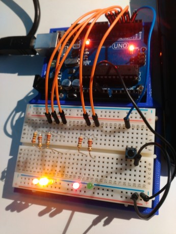

Many systems can be described with state diagram. Therefore they can be implemented with so called State machine code with system delay. System delay can be used in other project too, but I will show you how it works on automation processes example, which State machine is.
How to spot a State machine process? This part can be confusing. Even I make mistakes sometimes. Because of that, it is essential to do good planning before starting to code.
You can spot state machine process by simply trying to divide your process in several steps or states. The best way for me to describe this is with the example of such process. I will be using traffic lights as example. We can determine how many states and transitions between them there is. So here are the states in traffic lights example:
State 0 is initial state and this state machine works in a loop (from State 3 system goes to State 0). As you can see, states are unique parts of the code that must be carried out every time certain conditions are fulfilled. These conditions are called transition trigger. There is a big advantage using those, because certain trigger can only work, when you are in certain state. So other triggers cannot be detected.
All of the states above have a timer as a trigger. Here are the transitions triggers for this demo example:
Now the whole system can be presented with State machine diagram:

This diagram shows states and their transition triggers. Diagram above is example of sequence state diagram (states are listed in some sort of sequence). Other, similar systems can also be presented with such diagram.
To program that with Arduino,” switch(var)” statement is used. “switch(var)” worsk similar to nested if statements: it compare the value of var with example case inside the statement, only case code of same value as the var variable is performed. Here is switch() statement example:
a=3;
switch(a){
case 1:
// code 1
break;
case 3:
// code 3
break;
default:
// code N
break;
}
Only code 3 is performed since ‘a’ has a value of 3 and case 3 has the same value. “break” command is used for exiting switch statement and “default” is performed when none of other cases matches the value of ‘a’.
Each of the cases can represent one state. So code, that is specific to each state, goes into different cases. For now, we’ll be using “delay()” function within every case. Here is the example code and video:
Now the part I really like about state machine diagrams: they are perfect for implementing system delay code. System delay allows you to read inputs and set outputs while in delay function. So here is how it works.
Instead of one long delay, system delay is uniformed short delay, which is still longer than time required to do processing part in the code, and system counter. System counter counts number of cycles (how many times main loop was repeated). With help of number of loops and uniformed system delay, we can create illusion of uninterrupted operating. Let’s say we want something to be performed every second. We’ll use module to determine that. Modulo is returning remainder from dividing integer with another integer. If modulo returns ‘0’ that means that system counter is divisible with the number of cycle for certain delay. We’ll be using 100 ms system delay, therefore when modulo of system counter and number 10 will return 0, that means a second has passed, since 10 cycles of 100 ms have a length of 1 s. We will ignore duration of processing since it only few ms in length (few % of system delay and few ‰ of whole delay). Here is an example of such code:
void loop(){
if((i%10)==0){ // if modulo will return 0, that means that system counter ‘i’ is divisible by 10
// code
}
i++;
delay(100);
}
So what we have gained here except additional lines? If delay would be longer, let’s say 10 s, and in the meantime we would want to read pushbutton, we wouldn’t be able to do read the button with 10 s delay, but we can do it with system delay. We can do it like in example code bellow:
void loop(){
button = digitalRead(pin);
if((i%100)==0){ // if modulo will return 0, that means that system counter ‘i’ is divisible by 10
// code1
}
If(button == HIGH){
// code2
}
i++;
delay(100);
}
As you can see, button will be read every 100 ms so ‘code2’ would run every time pushbutton will be pushed and ‘code1’ will still be waiting for its 10 s delay. As before, we will ignore duration of the processing since it will only last few ms.
Usually system delay is 50 ms or more (I’ve never used lower values and I’ve never used delay longer than 500 ms).
Now back to the state machine. Now I want to add another 2 lights for pedestrian crossing. I will make things simple as plausible. Therefore I will add one pushbutton and red and green LEDs where green one will be On only in State 0 and when pushbutton was pressed and red one will be On any other time. Let’s add that to the State machine diagram:
Only change now is that if pushbutton was pressed, Green pedestrian light will go on while in State 0, otherwise Red will be lit. As you can see, there is transition trigger to go to Pedestrian On state, but as soon as it is implemented, system will return to State 0. Therefore we can say that Pedestrian On and Off are part of State 0. Here is the code and the video of such system: